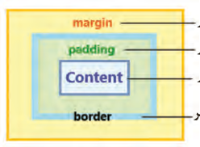
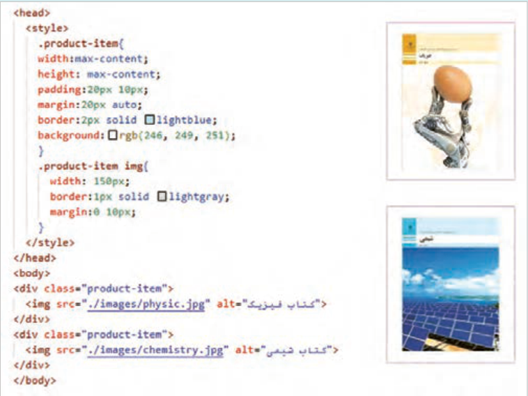
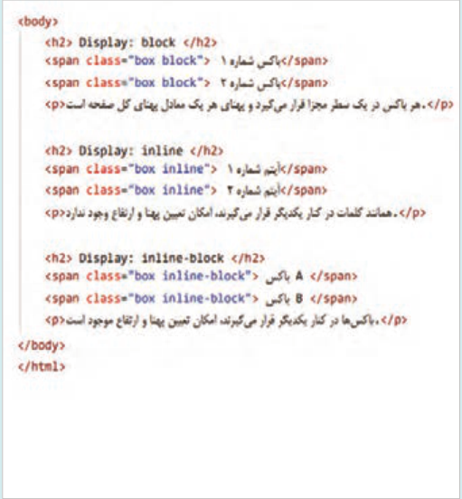
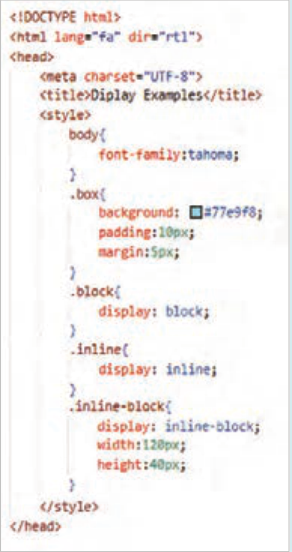
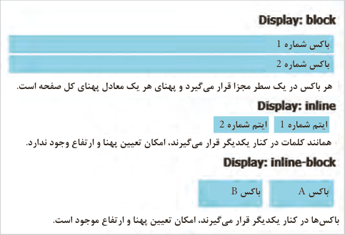
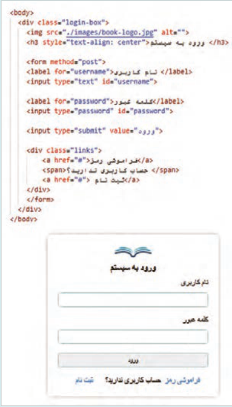
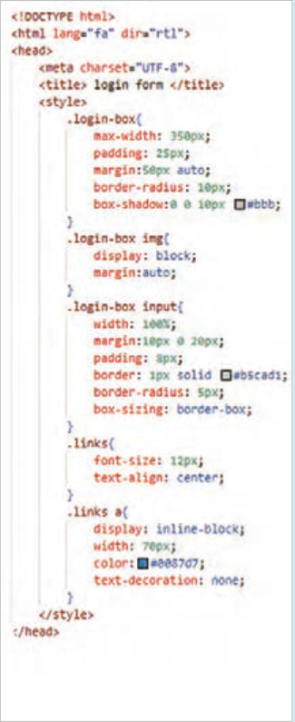

صفحه ۱۲۸
مدل جعبهای (Box Model) مدل جعبهای (Box Model) در CSS برای طراحی و چیدمان عناصر در صفحات وب استفاده میشود. هر عنصر HTML بهعنوان یک «جعبه» در نظر گرفته میشود که شامل چهار قسمت محتوا (content)، فضای اضافی داخل عنصر (padding)، خط دور (border) و فاصله عنصر تا عناصر مجاور (margin) است. در مثال زیر این تنظیمات قابل مشاهده و بررسی است: (شکل25) .
ویژگیهای width و height صرفاً پهنا و ارتفاع ناحیه محتوا (content) را مشخص میکنند. بنابراین مقداردهی به ویژگیهای padding، margin و border باعث افزایش ابعاد نهایی جعبه میشود. این مقادیر باید در محاسبات ابعاد جعبه لحاظ شود. برای

فاصله تا عناصر دیگر
جلوگیری از تأثیر دو ویژگی border و padding
فاصله بین محتوا و خط دور
روی پهنا و ارتفاع عنصر از ویژگی box-sizing با
محتوای عنصر
مقدار border-box استفاده میشود. با انجام این کار، مجموع ابعاد محتوا، padding و border در
خط دور عنصر
راستای افقی و عمودی برابر با مقادیر width و height خواهد بود.
شکل24
بررسی عملکرد مدل جعبهای
کار کارگاهی
فایلی با نام box-model.html ایجاد کنید و دو عنصر <div> و <img> را به همراه سبک آنها درون فایل وارد کنید:

صفحه ۱۲۹
در فایل index.html (کارگاه قبل) ویژگیهای مارجین و پدینگ عنصر ul را برابر صفر قرار دهید (margin:0;padding:0) و برای عنصر header مقداری پدینگ تنظیم کنید (padding:10px20.px) سپس تغییرات منو را در مرورگر بررسی کنید.
مدل نمایش (Display Model)
مدل نمایش در CSS به نحوه نمایش و رفتار عناصر در صفحه وب اشاره دارد. این مدل تعیین میکند که عناصر چگونه در کنار یکدیگر قرار بگیرند و چگونه با هم تعامل کنند. مدل نمایش توسط ویژگی display با مقادیر مختلف تعیین میشود. در ادامه به شرح مقادیر این ویژگی پرداخته میشود:
block: عناصری با ویژگی display: block به صورت بلوکی نمایش داده میشوند و فضای کامل خط را اشغال میکنند. این عناصر به طور پیشفرض در یک خط جدید شروع میشوند و امکان تعیین width و height برای آنها فراهم است.
Inline: عناصر inline مانند کلمات رفتار میکنند، یعنی عناصر پشت سر هم قرار میگیرند و خط جدید ایجاد نمیکنند. این عناصر تنها بهاندازۀ محتوای خود فضا اشغال میکنند؛ در نتیجه تعیین width و height برای آنها بی اثر است. بهعلاوه اختصاص ویژگیهای margin برای قسمتهای بالا و پایین عنصر اثرگذار نخواهد بود.
Inline-block: این حالت ترکیبی از block و inline است. عناصر inline-block میتوانند به صورت بلوکی رفتار کنند، اما درون خط جاری قرار میگیرند. این عناصر میتوانند پهنا و ارتفاع داشته باشند و به اندازه محتوای خود فضا اشغال میکنند.
جدول 9 مقایسه عناصر Block و Inline در CSS
عناصر Inlineعناصر Block
ویژگی
در همان سطر ادامه پیدا میکنند.
همیشه در سطر جدید شروع میشوند.
شروع در سطر جدید
فقط به اندازۀ محتوای عنصر است. حتی با تعیین پهنا، کل سطر را به خود اختصاص میدهد.
پهنا (width)
معمولاً فقط به اندازۀ محتوا است.
میتوان تنظیم کرد.
ارتفاع (height)
<span>, <a>, <b>, <i>
<div>, <p>, <h1>, <section>
نمونه عناصر
چند عنصر کنار هم قرار میگیرند.
هرکدام در خط جدا قرار میگیرند.
رفتار در کنار هم
صفحه ۱۳۰
بهکارگیری ویژگی display با مقادیر block ، Inline و Inline-block .
کار کارگاهی



باکس شماره 1 باکس شماره 2 هر باکس در یک سطر مجزا قرار میگیرد و پهنای هر یک معادل پهنای کل صفحه است.
ایتم شماره 1 ایتم شماره 2 همانند کلمات در کنار یکدیگر قرار میگیرند، امکان تعیین پهنا و ارتفاع وجود ندارد.
باکس A
باکس B
باکسها در کنار یکدیگر قرار میگیرند، امکان تعیین پهنا و ارتفاع موجود است.
صفحه ۱۳۱
بهکارگیری ویژگی display در طراحی فرم ورود به سایت
کار کارگاهی
فایل login.html را در پوشه web برای ورود کاربر به سایت ایجاد کنید.

